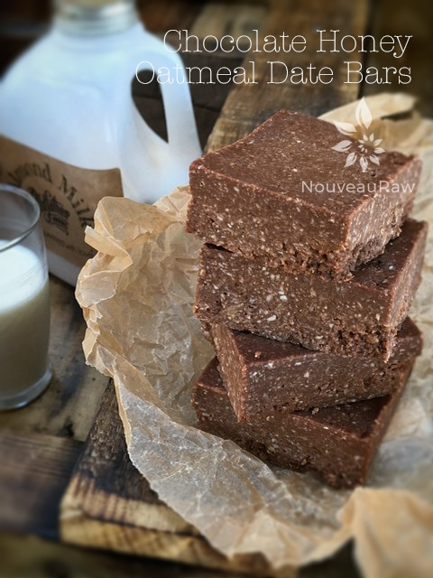

Chocolate Honey Oatmeal Date Bars

~ raw, gluten-free, nut-free ~
No dehydrator required I repeat, no dehydrator required! I hope you could hear me singing that from my rooftop. Haha, Though I LOVE my dehydrator, and it is a fantastic tool to have in the kitchen, but I do appreciate a quick and easy treat that I can pull together in a matter of minutes. And if I do, I am sure you do too. :)
Thick, chewy, chocolatey goodness. That sums it up really! Oh gosh, I got all caught up in the fact that you don’t need a dehydrator that I almost missed the fact that they are nut-free!
Don’t get me wrong, nuts are yummy, nuts are healthy, but many people are either allergic to them or have a hard time digesting them. So, having a treat that is raw, gluten-free, and nut-free can be a real victory.
Raw Honey, Not Vegan
Today, I am going to b-r-i-e-f-l-y talk about raw honey. I know you are busy and want to get on with making this bar, but I wanted to point out a few things about honey. The type of honey that you use can alter the success of these bars. I used raw honey that is super thick. If you use honey that is runny, it will change the texture of this recipe. I will provide a link below to the one that I use.
If you can, local honey is best. It is believed that ingesting local raw honey helps build up immunity to the local pollen, alleviating springtime allergies. Modern food-processing techniques often involve filtering honey for clarity and superheating it to avoid crystallization and extend its shelf life.
These processes can dilute much of the nutritional and health value of honey. Filtering might remove minerals, for example, and superheating honey partially destroys its vitamins, nutrients, and enzymes. The definition of raw honey is debatable.
Still, generally, it means honey that is strained (run through a screen to remove large particulate matter like chunks of beeswax), and not heated above ambient temperatures that could occur within the hive (generally nothing higher than 100 degrees). Buying local honey is better for the environment and also helps support your local community! I hope you enjoy these bars. Many blessings, amie sue
yields 16 bars
- 3 cups rolled, gluten-free oats, soaked & dehydrated
- 2 cups shredded dried coconut
- 1/2 cup raw cacao powder
- 1/2 tsp Himalayan pink salt
- 1/2 cup cold-pressed coconut oil, melted
- 1/2 cup raw honey
- 1 cup Medjool dates, pitted
Preparation:
- Warm the coconut oil and honey to a liquid by placing the jars in a large bowl and surround the jar with hot water.
- While the coconut oil and honey are melting, put the shredded coconut, cacao, oats, and salt in the food processor, fitted with the “S” blade. Process until everything is broken down and mixed.
- Add the melted coconut oil and honey, process until everything is mixed, and then while the food processor is running, drop the dates down the chute one at a time. Keep processing until the batter forms a ball and sticks together.
- Line an 8 x 8″ pan with plastic wrap and place the batter on the pan. Press firmly and evenly. Cover and place in the fridge or freezer to firm.
- Remove and cut into desired shapes and sizes.
- Keep stored in the fridge for 7 days or several months in the freezer.
The Institute of Culinary Ingredients™
- Raw honey isn’t vegan, but I still use it now and again. Read (here) why I like to.
- Dates are a fantastic ingredient for raw food recipes, click (here) to read why.
- What is raw cacao powder?
- What is Himalayan pink salt, and does it matter? Click (here) to read more about it.
- Are oats gluten-free? Yes, read more about that (here).
- Are oats raw? Yes, they can be found. Click (here) to learn more.
- Do I need to soak and dehydrate oats? Not required but recommended. Click (here) to see why.
© AmieSue.com